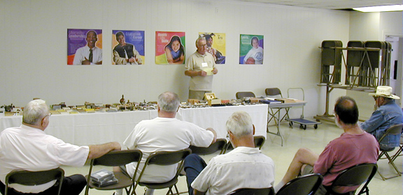
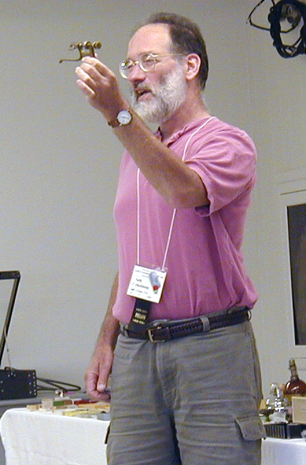
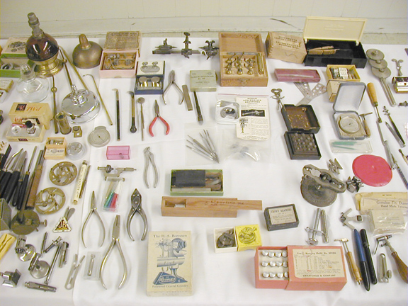
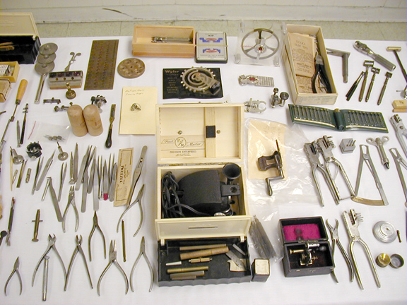

Specialized and Antique Horology Tools
This is an archived report. Meeting places, times and people have changed since it was written. See Meetings for current details.

Approximately 150 members showed up for the September 12th Meeting and MART. Fifty tables were manned in the MART area and Eleven tables held silient auction items. As usual, watches were the big Mart item, with clocks and tools following. We were pleased to have former National Secretary Nancy Ankrum as a visitor, having recently moved to the Bay Area.

Chapter business items included noninations for 2005 Board members, and the availability for review of a new set of Bylaws, the existing set needed some revisions.

Member Ron Bechler was our speaker for the day giving a presentation on “Specialized and Antique Horology Tools. Ron started collecting watch specialized tools that were in original boxes or containers. For the presentation Ron completely filled two seven foot Mart tables with hundreds of hand and a few motorized tools. One corner of one table was stacked with tool and parts catalogs. Not all of the tools were in original boxes, Ron’s collection has grown, buying tools from retired watchmakers and Regional Marts.

There were too many tools for Ron to describe everything displayed, he choose “what were these used for” tools to the delight of the members. Show and tell items brought in by Price Russ and Seth Finkelstein included a small “Bow lathe”, one for plate broches , the other with a two jaw chuck to hold odd shaped items, and a manual screw head polisher.
Ron had a interesting Sear’s catalog with many pages showing watch tools and watch parts. Another was a tool catalog that he paid to have reproduced, only later finding the complete catalog at a Regional.